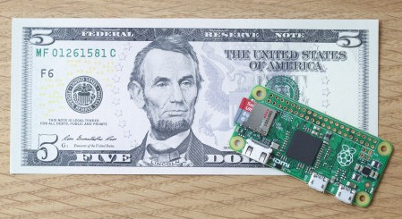
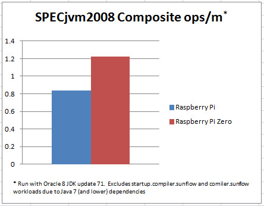

Less than a year after the introduction of the Raspberry Pi 2, the Raspberry Pi foundation has once again outdone itself with yet another landmark product launch: the Raspberry Pi Zero.
Image taken from https://www.raspberrypi.org/blog/raspberry-pi-zero/
The Raspberry Pi Zero is truly revolutionary.
At 40% the size of the original Pi, it consumes less than half of
the power, and can be configured to
draw as little as 80mA. It has a faster processor than the
original (Java performance graph below), and maintains binary
compatibility with previous generations. And with a list
price of $5US, the dream of offering serious computing power to
nearly anyone on the planet comes ever closer to reality.
Here are a some of the high level features:
At the time of this article's creation (Jan 2016), availability is limited, as the first shipment sold out quite rapidly (no surprise there). I was able to procure my Pi Zero on the black market. That is to say I bought it on eBay at a substantial uplift.
In terms of Java performance, the chart that follows compares SPECjvm2008 benchmark results for a Raspberry Pi and a Raspberry Pi Zero utilizing the latest available Oracle JDK (1.8.0_71). The larger the number, the better, the Pi Zero outperforms the original by 45%.
Another feel-good aspect to this story is that the
Pi Zero will be manufactured in Wales. Here's hoping that in
the near future supplies will meet the pent up demand.